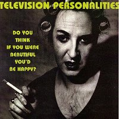

Television Personalities |
 1995 - Vinyl Japan - TASK48/CD48 - 12"/CD Songs: He Used To Paint In Colours Who Will Be Your Prince? (Instrumental) Do You Think If You Were Beautiful You'd Be Happy? I Suppose You Think It's Funny Performed by Daniel Treacy. Percussion and drums on side two track A by Mark Flunder and Liam B. Watson. Produced by the Rt. Hon. Liam B. Watson at Toe Rag Studios, London on January 16th 1995. Portrait of Sexton Ming by Alison "Arbus" Wonderland. |